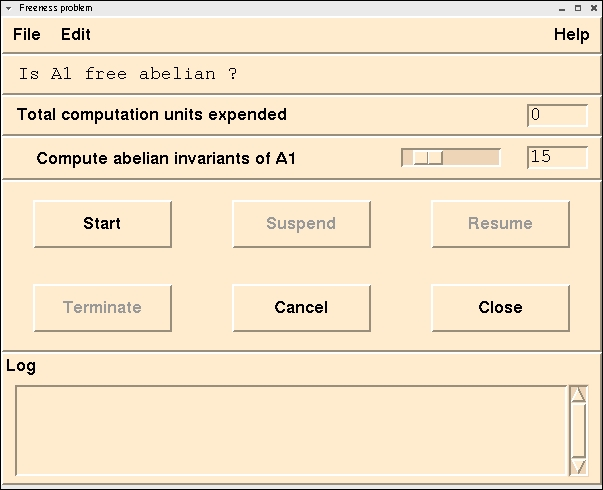

Magnus
A System for Exploring Infinite Groups
[prev]
[home]
[next]
An Example Session
Managing the Computation Resources
There are very few problems in Infinite Group Theory that have
algorithmic solutions.
For most problems the best we can do is to apply a procedure and
hope it returns an answer.
When you ask Magnus a question that it cannot answer immediately
it shows the Problem Control Window.

This window contains 6 panels.
The first contains the menu.
The second contains the question you are asking.
The third contains the "Total computation units expended".
This is a measure (in undefined units) of how much effort has been expended.
The fourth contains a list of all of procedures which can answer the question.
Since these are procedures we do not know if they will terminate. Magnus
allows
you to allocate a percentage of the total computation units to
each task. The first task to
find the answer will abort the other procedures.
Thus it is a race to find the answer.
The fifth contains the control buttons.
The sixth contains a log of any messages that the procedures generate.
[prev]
[home]
[next]